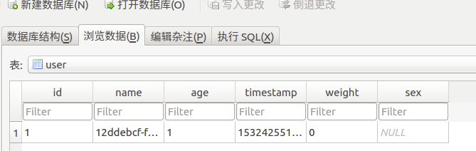

Room版本迁移遇到的问题
本文的Room源码基于1.1.1版本
数据库升级的过程就像排雷一样,稍有不慎就炸了
对于遇到的问题我们来还原下现场，有下面2种场景
- V1->V2： 增加字段
- V2->V3： 修改原有字段类型，删除原有字段
增加字段(V1 -> V2)
先实现个V1版本
首先实现一个Entity类
该类一共有4个字段,其中id为自增长的主键。
接下来实现一个简单的DAO层接口:
这里该接口就简单的增加和查询，
再下来实现一个Database类：
最后,往数据库中写入一条数据就完成本次的V1版本
|
|
实现V2版本
现在我们要实现V2版本，先来看看Entity类中有何变化:
从上面代码中可以发现新增了weight和sex两个字段，接下来需要提供migration以使数据库版本变化时数据可以保存下来：
|
|
这里对AppDatabase中进行了一些改变，首先将version变为了2,同时调用了addMigrations方法,在migrate方法中我们执行了2条SQL语句,增加INTEGER类型的weight和TEXT类型的sex这两个字段,现在升级数据库的准备工作做完了,我们打包运行一下。
程序出现崩溃-_-!
|
|
细看可以发现可以发现这两者有一处不同：
Expected：
weight=Column{name=’weight’, type=’INTEGER’, affinity=’3’, notNull=true, primaryKeyPosition=0}
Found:
weight=Column{name=’weight’, type=’INTEGER’, affinity=’3’, notNull=false, primaryKeyPosition=0}
不同点就在于notNull这项,因此问题就出在之前migrate中的第一条SQL语句,现在我们修改那条语句:
|
|
为什么除了加入NOT NULL 之外还要加上DEFAULT 0 ?
因为加入了NOT NULL不能为空，所以要给它赋上初始值，具体初始值可根据你的实际情况考虑，在此默认写0.

现在重新打包运行,程序不崩了,导出数据库一看，字段也成功加了上去，现在从v1到v2升级成功。
修改原有字段类型，删除原有字段(V2 -> V3)
实现V3版本
现在来看看V3版本的Entity发生了什么变化:
|
|
对比V2版本的Entity，V3版本将weight字段的类型从int变为了String，删除了timestamp字段，同时给name字段加上了@NonNull的注解(这一改动产生的影响稍后说明),接下来我们来看看AppDatabase中的改动：
|
|
对于V2升V3的流程我们可以在上面的注释中了解,现在我们来看看SQL中注释的那三个关注点，对于这三个关注点你可能会提出下面几个疑问：
- 1.为什么TEXT类型的name字段加上了NOT NULL的约束?
- 2.为什么INTEGER类型的age字段加上了NOT NULL约束？就算加上了NOT NULL为什么不像V1升V2时那样再加上DEFAULT 0之类的初始值?
- 3.为什么从INTEGER改为TEXT类型的weight字段不用加上NOT NULL?
对于这三个疑问我们先不急着回答，我们先来看看Room的数据库升级的过程大致是怎么进行的。
Room数据库迁移的大致流程
Room中使用了大量的注解,由于我对于注解还不够了解，所以有错误望指正。
Room在编译期间通过使用apt来获取注解信息并通过javapoet来生成实现类的代码,以本文中的代码为例,这些实现类的位置在./app/build/generated/source/apt/debug/package/ 中。对于本文中的AppDatabase这个类，Room会生成一个名为AppDatabase_Impl的实现类在上述文件夹中。
AppDatabase_Impl实现了4个抽象方法，一个是AppDatabase中的抽象方法,另外三个是AppDatabase的父类RoomDatabase中的三个抽象方法：
|
|
- 在AppDatabase_Impl实现的createOpenHelper方法中创建了RoomOpenHelper,并实现了其代理的5个抽象方法:
|
|
- 在createAllTables的实现方法中,从第一条执行的语句我们可以看到id、name、age这三个字段都被设定了NOT NULL的约束：
|
|
- Room在检测到数据库版本有更新时会调用RoomOpenHelper中的onUpgrade方法:
|
|
在onUpgrade方法中又会调用AppDatabase_Impl中实现的validateMigration方法,在这个方法中验证了当前数据库的表结构与根据Entity生成的表结构是否相同,如果校验通过那升级的大致流程就结束了:
12345678910111213141516171819202122protected void validateMigration(SupportSQLiteDatabase _db) {//将根据Entity生成的Column对象存入map集合final HashMap<String, TableInfo.Column> _columnsUser = new HashMap<String, TableInfo.Column>(6);_columnsUser.put("id", new TableInfo.Column("id", "INTEGER", true, 1));_columnsUser.put("name", new TableInfo.Column("name", "TEXT", true, 0));_columnsUser.put("age", new TableInfo.Column("age", "INTEGER", true, 0));_columnsUser.put("sex", new TableInfo.Column("sex", "TEXT", true, 0));_columnsUser.put("timestamp", new TableInfo.Column("timestamp", "INTEGER", true, 0));_columnsUser.put("weight", new TableInfo.Column("weight", "INTEGER", true, 0));final HashSet<TableInfo.ForeignKey> _foreignKeysUser = new HashSet<TableInfo.ForeignKey>(0);final HashSet<TableInfo.Index> _indicesUser = new HashSet<TableInfo.Index>(0);//上方创建的TableInfofinal TableInfo _infoUser = new TableInfo("user", _columnsUser, _foreignKeysUser, _indicesUser);//读取当前数据库中的TableInfofinal TableInfo _existingUser = TableInfo.read(_db, "user");//判断这两个TableInfo是否相同，是不是感觉有点眼熟~_~!if (! _infoUser.equals(_existingUser)) {throw new IllegalStateException("Migration didn't properly handle user(cc.noharry.dbtest.User).\n"+ " Expected:\n" + _infoUser + "\n"+ " Found:\n" + _existingUser);}}之前在V1升V2的例子中因为缺少NOT NULL的约束导致在这一步中断了升级,那究竟应该如何判断是否应该加上这个约束呢？下面我们从源码中看看能不能发现问题的根源。
Room源码
由于这次我们看的源码在compiler包中，官方用kotlin作为编码语言，鉴于我的kotlin水平还处于听过的水平，那我们试试联系上下文来完成这次的“阅读理解”吧，有错误的地方欢迎大家批评指正。
首先来到入口类RoomProcessor.kt中的初始化方法:
1234override fun initSteps(): MutableIterable<ProcessingStep>? {val context = Context(processingEnv)return arrayListOf(DatabaseProcessingStep(context))}接着来到DatabaseProcessingStep类中的process方法:
|
|
- 从上面的注释中我们可以看到databases中的元素通过DatabaseWriter的父类ClassWriter中的write方法生成实现类,下面我们进入DatabaseWriter.kt看看生成createOpenHelper方法的语句：
|
|
- 找到生成openHelper的方法SQLiteOpenHelperWriter(database).write(openHelperVar, configParam, openHelperCode),SQLiteOpenHelperWriter.kt:
|
|
- 在SQLiteOpenHelperWriter.kt中找到了生成validateMigration的方法,现在我们离最后的真相又进了一步，现在进入TableInfoValidationWriter.kt看看：
|
|
- 现在我们发现了NOT NULL的约束，它看起来是field的属性，我们到Field.kt中看一下:
|
|
- 现在我们进入element_ext.kt看下isNonNull()方法:
|
|
- 真相终于找到了！一共三个条件判断其类型是不是Primitive，是否包含Android中的NonNull注解，是否包含kotlin中的NonNull注解，而isPrimitive是OpenJdk中的方法，也就是判断其类型是不是基础类型：
|
|
现在可以回答V2->V3中的三个疑问了
1.name 字段加上NOT NULL约束是因为Entity中加上了@NonNull注解
2.age 字段加上NOT NULL约束是因为int是基本类型，同时因为非空所以要加上初始值
3.weight 字段虽然之前在数据库是INTEGER类型的需要NOT NULL约束，但在变成TEXT类型后Room已经不会自动给他加上NOT NULL约束，因此不需要加上NOT NULL
总结
现在我们知道了在Room中所有基本类型的字段，和@NonNull注解的字段都会加上NOT NULL约束，在数据库升级时我们在写migrate方法时尤其需要注意